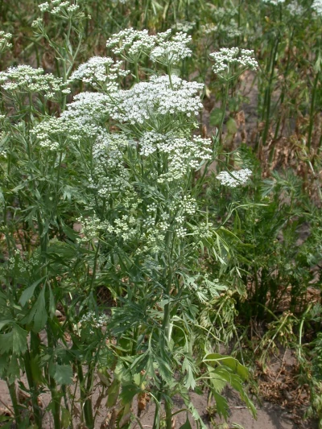
Fűszernövény
Főzelékek, vadas ételek, mártások ízesítésére, de édességekbe is használják.
Likőrgyártásban jelentős.
Gógyhatása: étvágyjavító, emésztést serkentő, vértisztító.
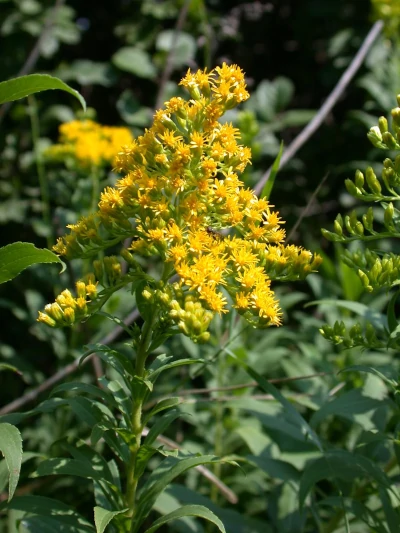
Gyógynövény
Gyógyhatása: Vizelethajtó, gyulladáscsökkentő és immunrendszert aktiváló hatása van.
Drogként a szárított virágzó hajtását és szárított gyökerét (Echinaceae radix) használják.
Immunrendszert erősítő, belsőleg meghűléses, illetve felsőlégúti és húgyúti megbetegedések megelőzésére használjuk.
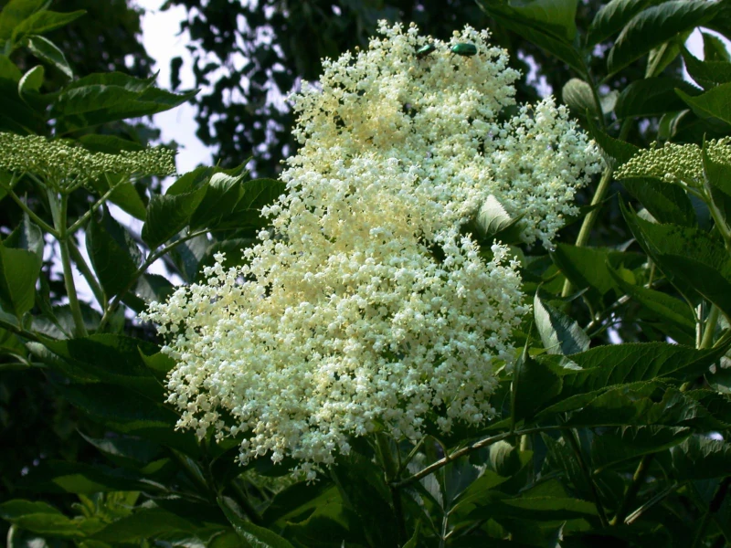
A drog a fekete bodza virága, valamint érett termése.
Meghűléses megbetegedésekben izzasztó, váladékoldó, enyhe vizelethajtó és hashajtó hatású.
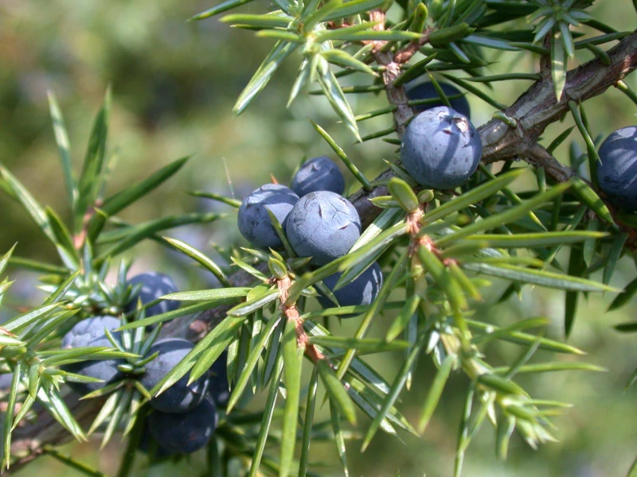
Gyógynövény
Drogja a tobozbogyó.
Serkenti az emésztést.
Vizelethajtó, enyhe görcsoldó.
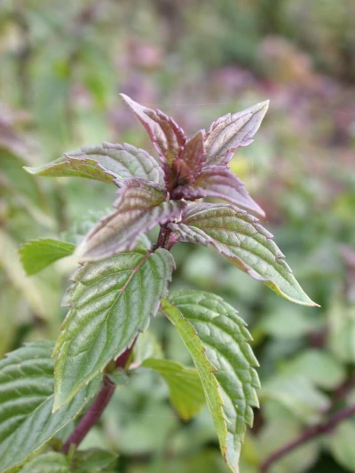
Gyógynövény
Drogja a szárított levél és illóolaj.
Gyógyhatása: Simaizom-görcsoldó, epehajtó és szélhajtó hatású. Emésztési problémák, gyomor- és bélgörcsökre.
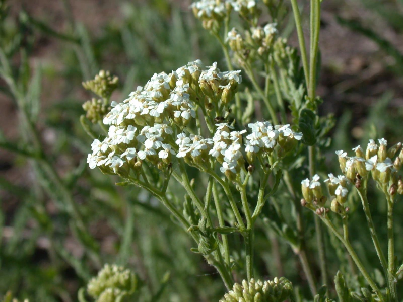
Drogja a virágzó, föld feletti hajtása.
Görcsoldó, antiszeptikus, bélhurut és étvágyjavítóként használják. Gyulladáscsökkentő ezért külsőleg ekcémára is hatásos.
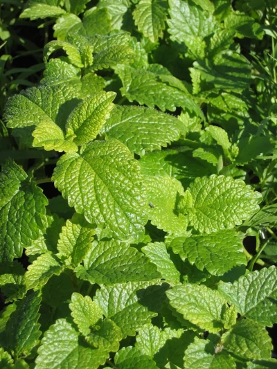
Drogja a föld feletti szárított virág és levél.
Nyugtató, antibakteriális, antivirális hatású.
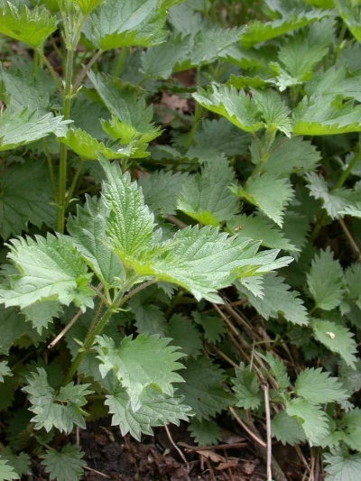
Drogja a szárított levél.
Gyógyhatása: vizelethatjó teák alkotórésze, ezenkívül használják köszvény és reuma kezelésére is.
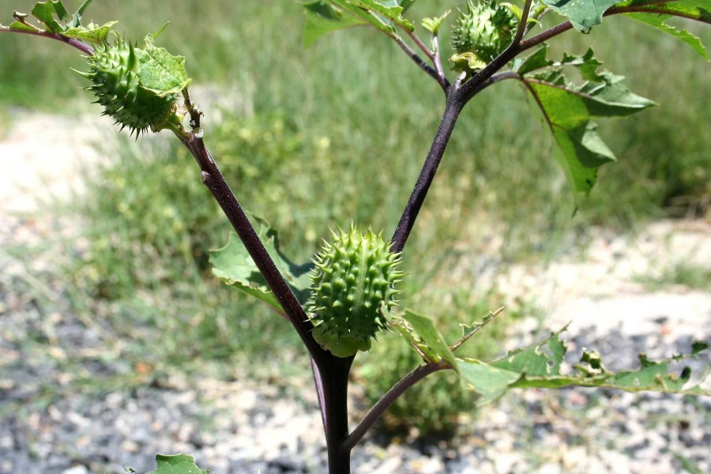
Drogját a virágzó növény levele adja.
Tekintettel erős toxicitására (alkaloidokat tartalmaz) nem tartozik a szabadon forgalmazható gyógynövény drogok közé. Csökkenti a kiválasztást és a simaizmok görcskészségét.
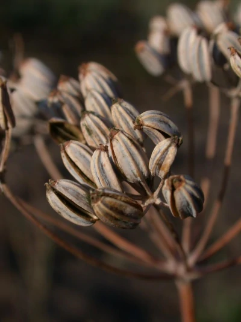
Drogot a termése szolgáltatja.
Szélhajtó, emésztés- és étvágyjavító, enyhe görcsoldó és epehajtó hatású.
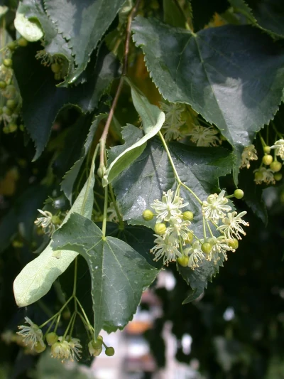
Drogját a kislevelű hárs, a nagylevelű hárs vagy a közönséges hárs egész, szárított virágzata adja.
Felső légúti hurutok, lázas meghűlés, köhögés, gyulladások esetén izzasztó, köptető, nyálkaoldó hatása miatt alkalmazzák.